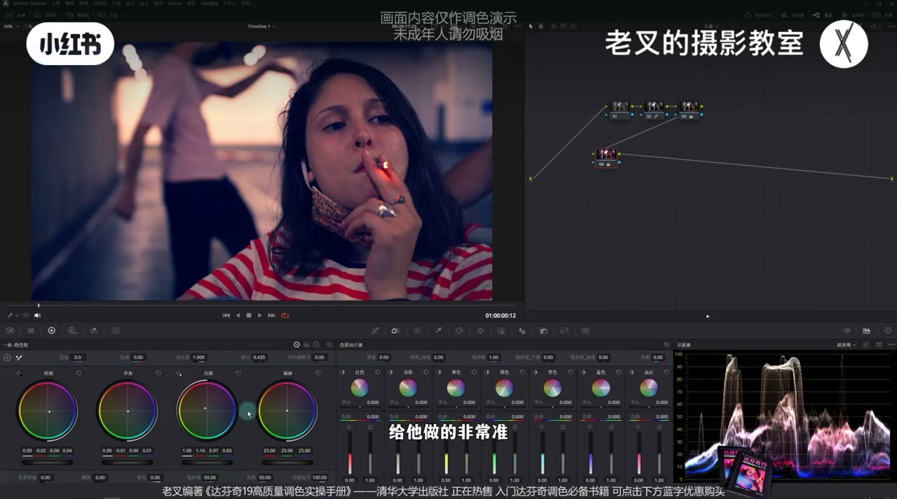
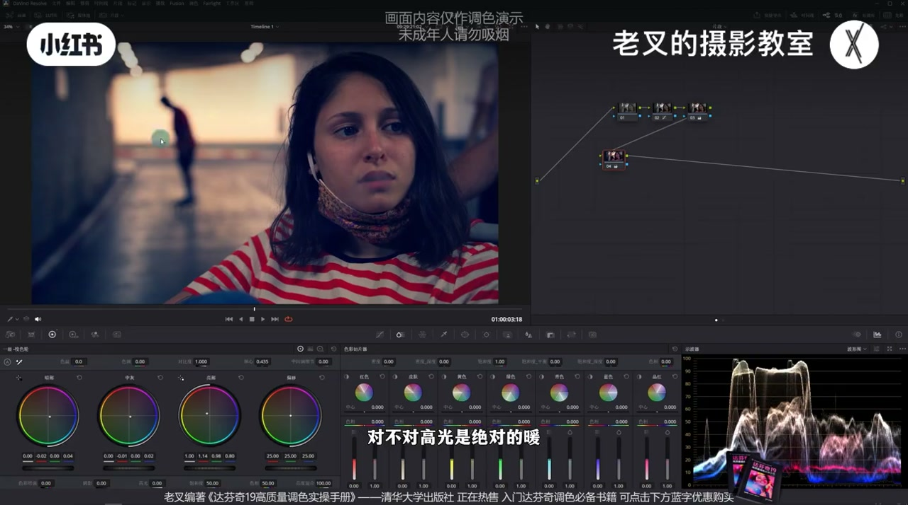
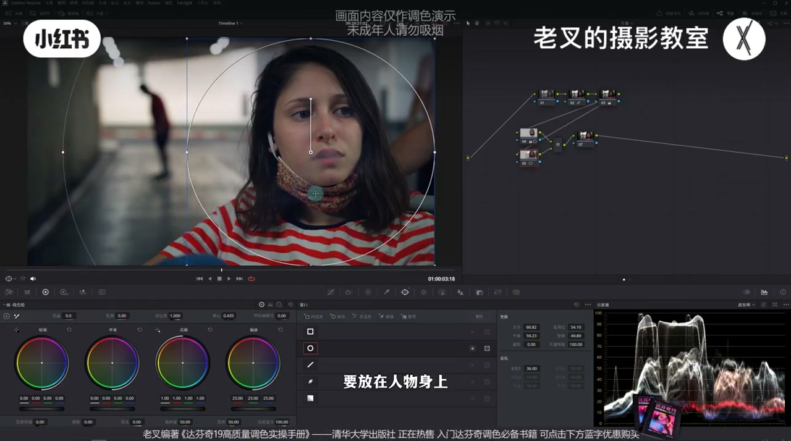
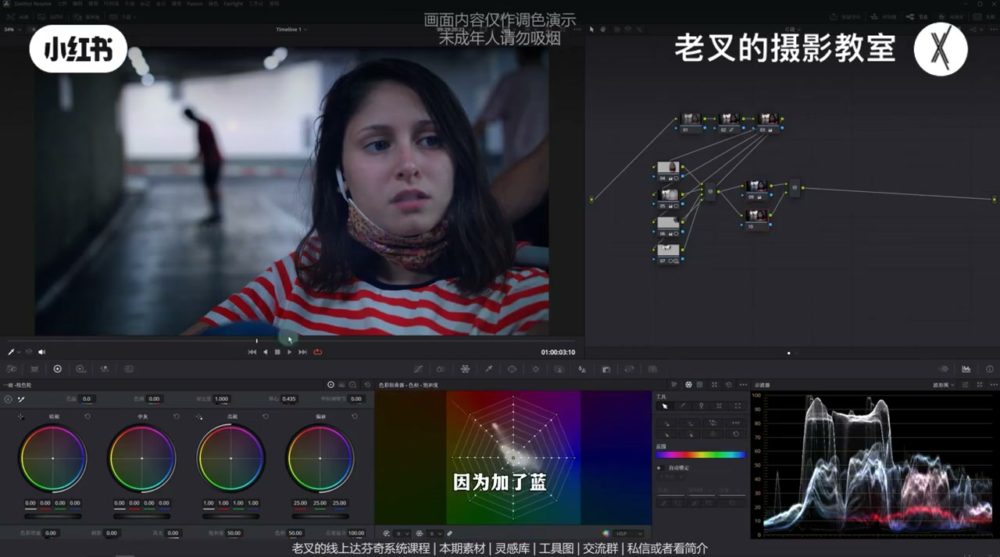
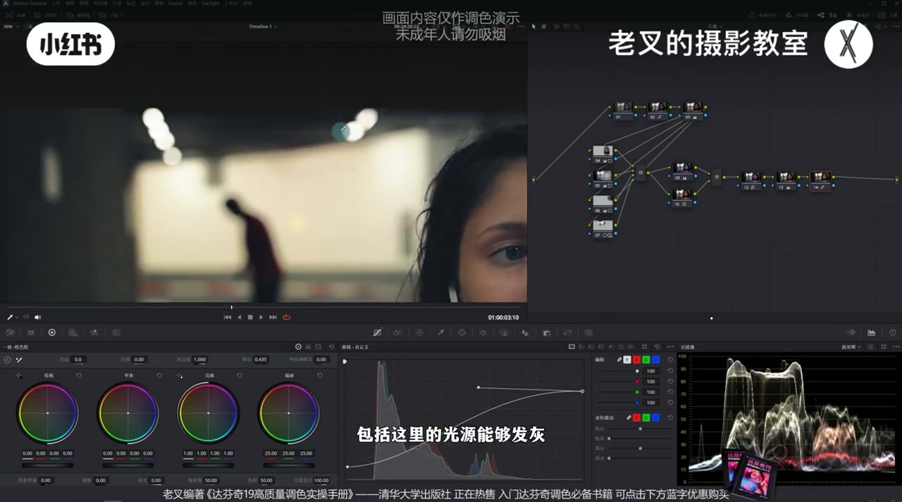

内容要点
老叉回应「一级校色轮怎么染都脏、颜色很强势」：一级轮染色靠中灰回调限制高光暖/暗部冷的作用区，但全局染色仍按曝光分区侧重——主体不够亮就匹配不上「亮暖暗冷」，脸上暗面容易浮蓝。解法是先重塑曝光分区再染色；杂色可用加蓝纠肤+降青蓝饱和，比硬收向量示波器（蜘蛛网）更稳。
知识结构
亮暖暗冷靠一级轮+中灰回调；一步很难准，强势染色易不舒服。
乍一看还行，脸暗面浮蓝——人物不够亮，匹配不上亮暖暗冷设定。
提亮人物、暗角压四周、压抢戏墙与背景高光；主体成为最亮。
蜘蛛网收缩有破坏性；更推全局加蓝→并行纠肤→降蓝青/红饱和。
分区到位后一级轮染色干净；柔和对比度用可编辑样条线控高光波谷。
一级校色轮染色脏，往往不是轮子坏了，而是曝光分区没让主体成为真正的亮面。先调光后调色；染色时记得中灰回调，杂色用加蓝纠肤比硬剪向量更自然。
00:00-00:54问题：一级轮染色很脏、很强势
很多人问：为什么一级校色轮染色怎么染都很脏、颜色特别强势。他以时装周风素材为例，先还原灰片；若要高光偏暖、暗部偏冷，常理是亮部色轮往左上、暗部往右下——有调色台两个轮一起搓更方便，但一做就会觉得不舒服。
核心在于回调：用中灰色轮限制高光暖与暗部冷的作用区域，因为一级轮染色是全局的。即便做了回调，也很难说一步到位做准，需要后面结合曝光再细修。

00:54-01:46浮蓝：主体不够亮，匹配不上亮暖暗冷
重置后再做一版：乍一看染色还行，但主体脸上的暗面会浮一层明显的蓝。原因是——一级轮虽全局染色，仍靠曝光分区侧重；人物不够亮，就不能完全成为「亮面」，也就匹配不上「亮暖暗冷」设定。背景里也能看到：高光偏暖、暗部偏冷，中间有过渡，说明回调方向没错，缺的是曝光匹配。
临时验证：按住 Shift+S 往前建节点，给人物画遮罩略提亮，脸上浮蓝会消失——这也是「先调光后调色」的原因之一。但这版人物强化太突兀，需要删掉重做曝光。

01:46-02:57重塑曝光分区：主体最亮，四周与抢戏区压暗
他把节点拉到第二排，在新进的四号节点小幅提亮人物，不要提太多、别亮得过头。再按 Option+P（或 Shift+P）建并行节点，画遮罩给四周做暗角——人物在右侧时，暗角中心要放在人物身上再反转压四周；压暗同时略提高光滑块，避免「只压不提」。
右上角墙面与背景高光若抢戏，分别画遮罩降曝光，背景高光可用 Highlight 色轮压。重点是让主体成为画面最亮，遮罩范围可画大一点，重塑曝光分区。

02:57-04:29归整杂色：加蓝纠肤优于硬收蜘蛛网
颜色先不急全局染色。杂色多时有两法：一是用向量示波器（蜘蛛网）往里收缩剪掉蓝绿等杂色——有效但偏破坏性，可能断层，他不太建议。二是先全局加蓝，皮肤受影响后用并行节点把肤色色相纠回来，并略加饱和补回被蓝对冲掉的黄，使画面除暖色外主要剩不同程度的蓝。
再开节点单独略降蓝色与青色饱和（别降太多），去色不过于极端，色相差还能保留。衣服红太艳可略降红饱和，但要盯皮肤别失血色。素材可私信或看简介加入知识分享平台免费自取。

04:29-05:43曝光到位后再一级轮染色 + 柔和对比度
主体亮、背景暗之后，可相对放心地用一级校色轮染色：高光走带黄绿感的暖，中灰回调，暗部再加一点冷——脸上不再浮蓝，符合设定；力度按喜好加减。
风格可再上柔和对比度：打开曲线，右上角三点里选可编辑样条线，把高光端往下降、高光延伸出的波谷往上提，暗部往上提、暗部延伸波谷往下降——强化风格、让高光不那么刺眼，暗部带一点灰。可加可不加。与还原对比，是干净且极强风格化的结果。本期重点：一级校色轮染色两要点——回调，以及曝光分区；私信素材后记得练手。

完整转录（42段）
以下文本由 Whisper medium 模型自动转录，可能存在少量识别误差，已尽可能修正。
很多朋友都问过我为什么一级校色轮染色怎么染都很脏这个颜色就是非常非常强势对吧
我们以这个画面为例啊先给它做下还原这个是灰片假如说我们需要给这个画面高光做暖暗不做冷的话那按常理来讲就应该是用亮部色轮往左上角去走暗部色轮往右下角去走对吧
做的时候如果你有调色台的话其实做起来是比较方便的啊你两个轮一起搓这样一做呢你会发现它不舒服那为啥呢首先一级校色轮的染色核心在于回调这个呢之前有讲过大家可以看这一期简单的来说就是我们需要利用中灰色轮来做回调从而限制高光暖和暗不冷的区域因为一级校色轮染色是全局的但是对于这个画面就算我们用中灰色轮给它做回调你也很难说一步到位给它做得非常准比如说我们给它重置下重新做啊
比如说这个效果你现在这个染色炸一看好像还行啊但是我们看主体人物的脸特别是脸上的暗面它会浮上一层非常明显的蓝对不对这是什么原因呢虽然一级校色轮是全局染色但依旧是依靠曝光分区来做侧重的换句话说主体人物不够亮并不能完全成为亮面从而不能完美匹配我们的设定也就是亮不暖暗不冷的设定那这一点其实从背景也能看得出来对不对高光是绝对的暖暗不是绝对的冷而且中间是有过渡的
那说明我们回调这个行为是没问题的那要解决这个问题其实非常非常简单啊我们只需要按住shift加s往前建立一个节点给人物稍微体谅一点我给他画一个遮罩简单一画
让给他体谅了你会发现当我们体谅曝光了之后他脸上这种浮在表面的蓝就不见了对不对那这也就是为什么我们要先调光后调色的原因之一但是这样的调整它肯定是不好看的
人物强化的太突兀了所以呢我们可以先把这俩给删了啊重新给他好好做一下曝光我们给他建立几个节点拉到第二排在新进的这个四号节点中我们要先给人物提亮
然后呢小幅给他提亮一点不要提亮太多不要让我们这个人物亮的态度大概到这个程度就行了然后呢在按住要的加p或者是option加p建立一个并行节点
我们给四周稍微压暗一点画一个遮罩也就是给四周做一个按角啊
要注意因为有人物人物又在画面的右侧所以我们的按角的中心位置要放在人物身上然后呢再给他做一下反转给四周稍微压暗一点还是那句话
要一按你就不能只一按你还得提亮所以我们再稍微提高点高光画快
大概到这个程度吧然后呢我觉得右上角这个墙啊这一部分还是稍微有一点点抢系了有点太亮了所以呢我也给他画一个遮罩
然后给他降低点曝光大概一座再然后背景中的高光也是一样的我也觉得他有点抢系也给这一次画一个遮罩再利用highlight色轮把它曝光降低就行了
那曝光调这就差不多了我们可以大致看一下啊
我们重点在于是给画面做下曝光的分区调整人物这里有手可以让他这个遮罩范围大一点我们重点就是让人物主体人物让他变成我们画面中最亮的那个结果
重塑一下画面的曝光分区那差不多就到这个程度然后就是颜色先不急着全局染色我觉得画面的杂色实在太多了我们要归整归整啊有两个办法
首先第一个办法就是利用蜘蛛网给他收缩我们看到蜘蛛网中颜色非常多对不对我们可以这样子
把他往里收这些杂色都不要让他往里收那这个是方法一我们看到背景中这里原本有点蓝的有点绿的
都给我们颜色给剪了对吧往这边拉这边有个蓝色也给他剪了但这样做呢效果有但我不是特别建议因为他是有点破坏性的有可能断层
所以我建议第二种方式首先我们先给他全局加蓝
加到这种程度这时候皮肤也受到影响了对不对我们先按着加p用并行节点染色的方式把皮肤给他色相给他纠正回来
因为加了蓝他把原本肤色中的黄给他对冲了所以我们把他的饱和度稍微加回来一点让他的黄稍微多一点
好大概是这个结果那此时我们就让画面中
除了暖色以外就剩下不同程度的蓝这时候我们只需要再来一个节点单独降低点蓝色以及青色的饱和度就行了别降太多
蓝色也降一点
哎你看那这样一降的话你会发现效果是挺好的因为这样的去色不会做的非常极端也能够相对自然颜色之间的色相差还能够保留一部分
那同时我觉得他衣服上的红色有点艳啊也可以稍微降低点红色的饱和度
这个稍微降低点就行了别降太多我们在降这种红色的时候要时刻关注的皮肤不要让皮肤失去了血色
那这个素材呢我也传到了现场分享平台大家可以私信或是看我剪辑来加入后免费自取啊
还有达福建线上系统课程和线下调色训练营再然后就是染色了
因为我们已经做好了曝光分区啊主体量背景暗所以呢我们可以相对放心的利用一级校色轮来染色
那我们让高光走点暖
我想让他的暖带点那种黄绿的暖啊然后呢中灰回调
暗不能再给他加一点冷
好大概是这样的一个结果哎你看这种效果其实挺好的对吧
人物脸上也没有那种浮在表面的蓝
符合了我们的这个设定大概这个效果这个当然力度你看你自己的喜好啊你不想这么强就少做一点问题不大
最后呢我们也可以稍微强化一下风格来一个柔和对比度打开曲线右上角三个点中的可编辑的烟条线把高光这一端给他往下降
高光延伸出来的波感给他往上一提再把暗部给他往上一提把暗部延伸出来的波感啊给他往下一降
好大概是个效果那这样做的目的呢一方面是能够强化我们这个风格再一个就是能让我们的高光不要太刺眼啊包括自己的光源能够发挥暗部呢也能带一点点灰掉啊这个当然你看你喜好你可加可不加问题都不大那这样呢就调好了我们与还原后的画面在对比
这是还原后的画面这是调整后的画面就是有一个很强的风格化对不对染色呢也相对干净这是一个极强风格化的结果啊这一期呢重点是在于一起交色轮
染色的运用有两个一定要注意第一个就是回调第二个就是曝光的分区四菜呢大家也别忘了联系过去之后练练手